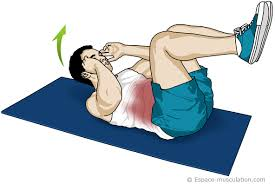
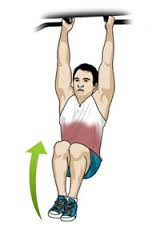
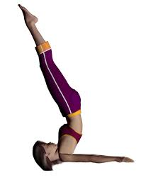
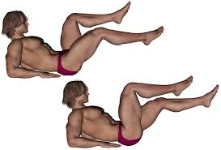
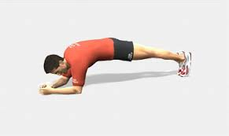
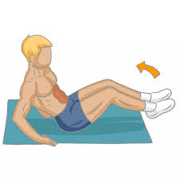

Le Crunch est l'exercice basique qui travaille les abdominaux , il est très efficace puisqu'il propose une très grande variété de mouvement, d'angles ainsi que d'amplitude pouvant vous faire considérablement évoluer.
 Cet exercice difficile permet de traailler la puissance et
le volume de la ceinture abdominale car le nombre de répétitions possible est limité avant de pouvoir faire des
séries longues. Il est conseillé de le faire en début de séance avant que la fatigue ou la congestion de bras vous
limite. Cet exercice muscle le grand droit de l'adomen et les lombaires.
CHANDELLE
Une bonne partie des effets de la Chandelle est due à l’inversion du corps. En effet l’afflux sanguin est augmenté, créant une circulation encore plus intense dans la région du cerveau qui est peu irriguée habituellement. Allongez vous sur le dos sur le sol en mettant vos bras le long de votre corps avec vos paumes tournées vers le sol. Levez les jambes et les hanches de quelques centimètres à la force des abdominaux, en pointant les pieds au plafond. Baissez lentement les hanches vers le sol en contractant toujours vos abdominaux.L'amplitude du mouvement est très limitée, ne soulevez pas les hanches de plus de 10 centimètres. Le mouvement doit être toujours contrôlé et lent, vous lèverez donc les hanches sans à-coup ni impulsion.
Pour que cet exercice soit efficace faites de longues séries jusqu'à ressentir une brûlure au niveau de vos abdos. En effectuant cet exercice respirez le plus naturellement possible et en expirant profondément et régulièrement. Allongez vous sur le dos, en appui sur les avant-bras posés au sol. Les jambes sont parallèles au sol, effectuez un mouvement de va-et-vient avec les jambes en amenant le genou vers le buste en insistant sur la rotation.Réalisez vos mouvements de chaque côté en alternant une fois le genou gauche, une fois le genou droit. Cet exercice appelé "le pédalo" travaille vos abdos, grands droits abdominaux.
Réservé aux athlètes comme aux sportifs de tous niveaux, le gainage est un exercice de musculation qui s'intègre parfaitement dans tous programme d'entrainement. Cette technique de gainage consiste a maintenir une position de contraction le plus longtemps possible afin de renforcer un muscle ou un groupe musculaire. La fatigue musculaire doit être assez importante pour rendre le mouvement efficace. Le gainage solicite la plupart des muscles du tronc mais permet surtout de renforcer les muscles superficiels et profond des abdominaux.
Le sit-up est un exercice de musculation à la portée de tous dans la mesure où il est très simple à réaliser. Débutants et habitués peuvent s'y adonner et profiter de ses bienfaits. Il suffit de placer les pieds sous n'importe quel support dans le but de relever votre buste en contractant vos abdominaux. Il s'agit d'un des exercices les plus aisé a travailler, il faudra en faire un maximum sans effectuer des faux mouvements. Cette exercice fait travailler le grand droit qui se trouve au niveau de la sangle abdominale.